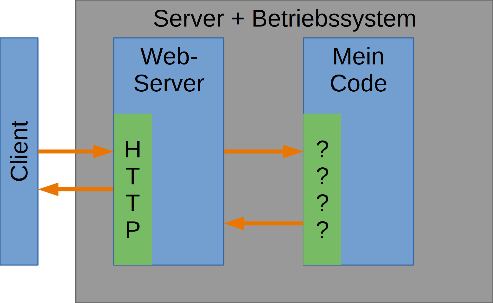
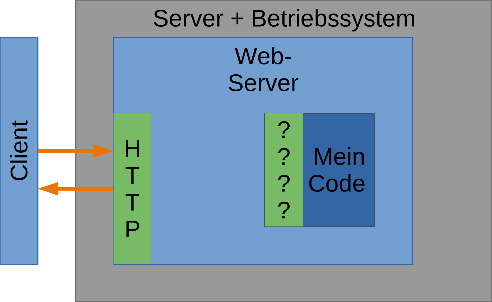
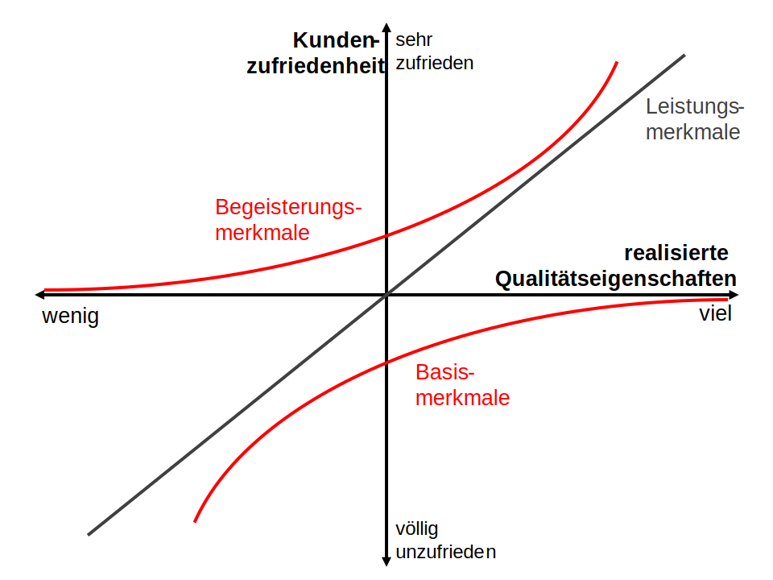
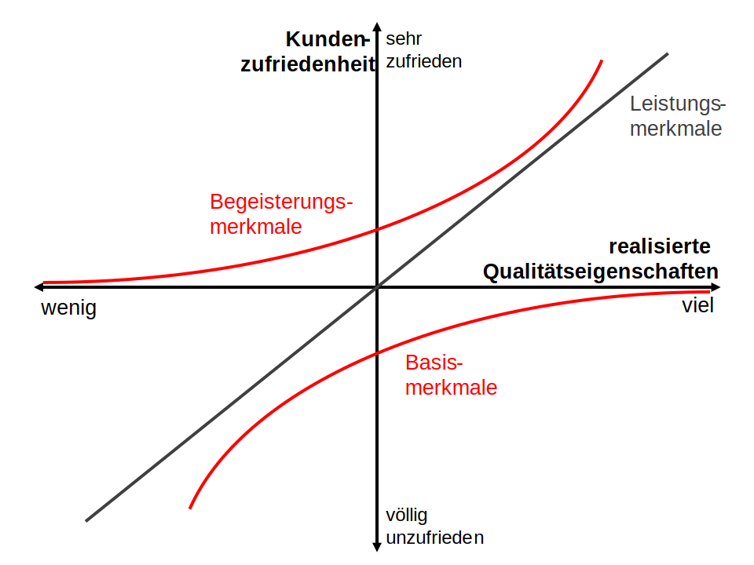

Webserver
Einstieg ins Backend / Rechenzentrum

Webserver - Mindmap
Bisher: lokale Datei-Ablage
Browser greift direkt auf lokale Dateien zu
"file"-Protokoll
Jetzt: mit Web-Server
Browser ruft Website von einem Web-Server ab
"http"-Protokoll

Lokal vs. Web-Server
Lokal
- Schema "file"
- Rechte des Benutzers der Browser
öffnet
. - Nur "lokaler" Zugriff
Web-Server
- Schema "http(s)"
- Rechte des Benutzers der Web-Server
startet
(± Server-Einstellungen) - Zugriff von "überall"
- Möglichkeit zur dynamischen Erzeugung der HTML-Seite
HTTP - ganz kurz
Hypertext Transport Protocol
- Protokoll: Übertragen von Daten übers Netzwerk
- Anfrage (Request): vom Client an den Server
- Antwort (Response): vom Server an den Client
- Anfragen/Antworten bestehen aus Metadaten (header) und Inhalt (content)
- Request-Response-Prinzip
- Keine Antwort ohne vorherige Frage!
- Anfragen Parameter
- Entweder via URL oder über Anfrage-Inhalt
Aufgaben eines Web-Servers
Verarbeiten von HTTP-Anfragen
- Auf Verbindung warten
- Anfrage entgegennehmen
- Anfrage validieren
- URL normalisieren
- Anfrage interpretieren
- Parameter auslesen
- Inhalt der Antwort erzeugen
statisch oder dynamisch
- Antwort senden
- Verbindung abbauen
Aufgaben eines Web-Servers 2
- Verarbeiten von HTTP-Anfragen
- Abarbeiten mehrer Anfragen gleichzeitig (Multithreading)
- Zuordnung von Anfragen anhand der URI
- Zugriffskontrolle
- Caching
- Komprimierung
Grundidee: Dynamisches erzeugen
nur Individualanteil selbst machen

Erste Idee: Getrennte Prozesse
Alternativ: Eingebetteter Prozess
SSI - Server Side Includes
Template-Ansatz: Tags innerhalb der HTML-Datei (.shtlm, .shtm, .sht)
<!--#SSI-Befehl parametername="parameterwert" -->
Ausführen einfacher Anweisungen, z.B.:
- #include – andere Dateien einfügen (file/virtual)
- #set – Variablen setzen
- #echo – Ausgabe von Variablen (var)
- #if, #else, #endif – Bedingungen
- #exec – Ausführen von Programmen (cgi/cmd)
- Globale Variable: DATE_LOCAL, DOCUMENT_NAME, DOCUMENT_URI, LAST_MODIFIED
SSI - Beispiel
<body>
Dynamisches HTML mit Server Side Includes
- Datum/Uhrzeit auf dem Server-Rechner:
-
Uhr
- Name dieser HTML-Datei:
-
- Installierte Server-Software:
-
- Ihr Web-Browser:
-
</body>
Quelle: SelfHTML
SSI - Server Side Includes
Vorteile:
- Einfach
- Für alle gängigen Webserver verfügbar
Nachteile:
- Wenige Möglichkeiten
- Langsam - üblicherweise getrennte Prozesse
- Sehr wenig Infrastruktur für komplexe Anwendungen
- Obsolete technik, schwindende Unterstützung
CGI - Common Gateway Interface
Schnittstelle um getrennte Prozesse zu vereinheitlichen
Erste Idee: Getrennte Prozesse

CGI - Common Gateway Interface
Standardisiert als RFC3875
HTTP – Aufruf wird an Prozess weitergereicht
- Üblicherweise Aufruf von Skripten
(z.B. PERL, PHP, Python) - Übergabe von URI und POST-Daten
mittels stdin und Umgebungsvariablen - Starten eines Prozesses bei jedem Aufruf
(Ausnahmen, z.B. spezielles Apache-Modul)
CGI - Beispiel
#!/usr/bin/perl -w
read(STDIN, my $Daten, $ENV{'CONTENT_LENGTH'});
my @Formularfelder = split(/&/, $Daten);
my ($Feld, $Name, $Wert);
my %Formular;
foreach $Feld (@Formularfelder) {
(my $Name, my $Wert) = split(/=/, $Feld);
$Formular{$Name} = $Wert;
}
print "Content-type: text/html\n\n";
print '<!doctype html>', "\n";
print "<html><head>title>CGI-Feedback</title></head>\n";
print "CGI-Feedback vom Programm comments.pl
\n";
print "Name: $Formular{AnwenderName}
\n";
print "Kommentartext: $Formular{Kommentartext}
\n";
print "</body></html>\n";
CGI - Common Gateway Interface
Vorteile:
- Für alle gängigen Webserver verfügbar
- Für viele (Skript-)Sprachen verfügbar
Nachteile:
- Langsam - üblicherweise getrennte Prozesse
- Wenig Infrastruktur für komplexe Anwendungen
Apache Module
Schnittstelle zur Erweitung des Apache Webservers
Viele Module frei verfügbar: PHP, Perl, Python, ...
Vorteile:
- Performanz
- Mächtige Programmiersprachen nutzbar
- Plattformunabhängig
Nachteile:
- Code kann Server zum Absturz bringen
- Mehr Sicherheitsherausforderungen
ISAPI - Information Server API
Proprietäre Schnittstelle von Microsoft für
- Internet Information Server (IIS)
- Microsoft Exchange Server
Aufgerufene Prozesse laufen als dll (Dynamic Link Library) im Prozess des Servers
Diverse Call-Backs an Server (z.B. CHttpServerContext)
DLL für diverse Programmiersprachen verfügbar
(ASP, ASP.NET, PERL, PHP)
ISAPI - Information Server API
Vorteile:
- Performanz
- Mächtige Programmiersprachen nutzbar
Nachteile:
- Code kann Server zum Absturz bringen
- Mehr Sicherheitsherausforderungen
- Plattformabhängig
Sprachunabhängigkeit
Alle bisher vorgestellten Systeme machen ~kaum Einschränkungen. "Mein Code" kann in ~allen Sprachen geschrieben werden.
- Ausnahme: SSI, eigene Mini-Skriptsprache
Skriptsprache auswählen (z.B. PERL), Skript kann über verschiedene Schnittstellen angesprochen werden
- Evtl. Anpassung an Schnittstelle notwendig
- Beispiel: CGI/PERL, ISAPI/PERL, Apache (mod_perl)
Sprachabhängigkeit
Web-Server Funktionalität/Kommunikation via HTTP wurde immer normaler
Kano-Model
 

Sprachabhängigkeit
Web-Server geschrieben in der gleichen Programmiersprache wie "Mein Code"